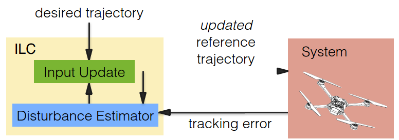

Acoustic manipulations is a research field that tries to apply a force to particles suspended in a water chamber by emmiting acoustic waves, presumably ultrasound, and thus creating standing waves with pressure gradients that result in forces onto these particles.
As a bachelor thesis, I developed an optical setup that made use of the Schlieren visualization technique to visualise the standing ultrasonic waves that were produced inside of a water filled 20x20x2mm transparent plastic box with piezo actuators.
The Research was performed in Prof. Jürg Dual's Mechanics and Experimental Dynamics Group at the Institute for Mechanical Systems of ETH Zürich, supervised by Dr. Dirk Möller
Publication: Article in Journal of Nanobiotechnology 2013, 11:21
Making use
Part of my master degree at ETH Zürich, I wrote my semester thesis during an exchange semester at the Dynamic System Lab of Prof. Angela Schoellig in University of Toronto's Insitute for Aerospace Studies.
Publication: Conference Paper from 2014 IEEE 53rd Annual Conference on Decision and Control (CDC)
A long term goal for autonomous robot research is to develop an accurate localisation technique based on visual-inertial data.
Part of my master degree at ETH Zürich, I wrote my semester thesis during an exchange semester at the Dynamic System Lab of Prof. Angela Schoellig in University of Toronto's Insitute for Aerospace Studies.
Acoustic manipulations is a research field that tries to apply a force to particles suspended in a water chamber by emmiting acoustic waves, presumably ultrasound, and thus creating standing waves with pressure gradients that result in forces onto these particles.
As a bachelor thesis, I developed an optical setup that made use of the Schlieren visualization technique to visualise the standing ultrasonic waves that were produced inside of a water filled 20x20x2mm transparent plastic box with piezo actuators.
The Research was performed in Prof. Jürg Dual's Mechanics and Experimental Dynamics Group at the Institute for Mechanical Systems of ETH Zürich, supervised by Dr. Dirk Möller